demo| calm_warm | 3.05 |
| cold_headwind | 3.35 |
| crosswind | 3.32 |
| gusty_light | 3.19 |
| hot_thin | 3.23 |
| storm | 4.08 |
| calm_warm | 3.11 |
| cold_headwind | 3.48 |
| crosswind | 3.39 |
| gusty_light | 3.26 |
| hot_thin | 3.29 |
| storm | 4.19 |
| calm_warm | 3.26 |
| cold_headwind | 3.54 |
| crosswind | 3.52 |
| gusty_light | 3.39 |
| hot_thin | 3.45 |
| storm | 4.33 |
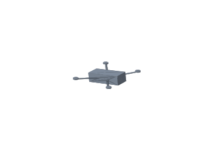
| calm_warm | 3.32 |
| cold_headwind | 3.66 |
| crosswind | 3.60 |
| gusty_light | 3.47 |
| hot_thin | 3.52 |
| storm | 4.44 |
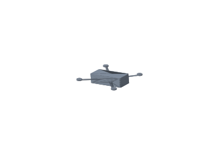
| calm_warm | 3.31 |
| cold_headwind | 3.74 |
| crosswind | 3.61 |
| gusty_light | 3.48 |
| hot_thin | 3.51 |
| storm | 4.49 |
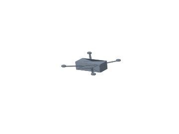
| calm_warm | 3.37 |
| cold_headwind | 3.85 |
| crosswind | 3.68 |
| gusty_light | 3.54 |
| hot_thin | 3.57 |
| storm | 4.58 |
| calm_warm | 3.11 |
| cold_headwind | 3.48 |
| crosswind | 3.39 |
| gusty_light | 3.26 |
| hot_thin | 3.29 |
| storm | 4.19 |
| calm_warm | 3.32 |
| cold_headwind | 3.66 |
| crosswind | 3.60 |
| gusty_light | 3.47 |
| hot_thin | 3.52 |
| storm | 4.44 |
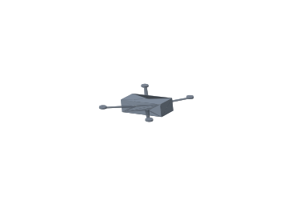
| calm_warm | 3.36 |
| cold_headwind | 3.80 |
| crosswind | 3.65 |
| gusty_light | 3.52 |
| hot_thin | 3.56 |
| storm | 4.54 |
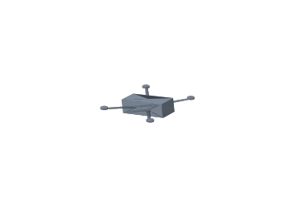
| calm_warm | 3.41 |
| cold_headwind | 3.80 |
| crosswind | 3.71 |
| gusty_light | 3.57 |
| hot_thin | 3.62 |
| storm | 4.59 |
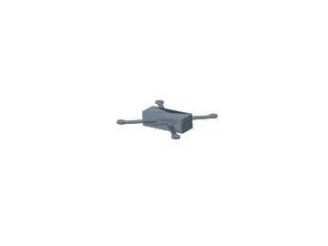
| calm_warm | 3.64 |
| cold_headwind | 4.71 |
| crosswind | 4.21 |
| gusty_light | 4.01 |
| hot_thin | 3.87 |
| storm | 5.32 |
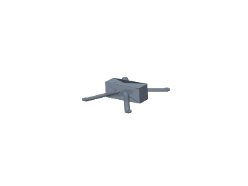
| calm_warm | 4.35 |
| cold_headwind | 5.21 |
| crosswind | 4.94 |
| gusty_light | 4.68 |
| hot_thin | 4.61 |
| storm | 6.10 |
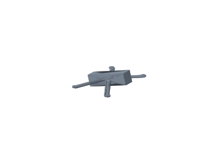
| calm_warm | 5.27 |
| cold_headwind | 5.59 |
| crosswind | 5.70 |
| gusty_light | 5.46 |
| hot_thin | 5.58 |
| storm | 6.95 |
| calm_warm | 3.32 |
| cold_headwind | 3.66 |
| crosswind | 3.60 |
| gusty_light | 3.47 |
| hot_thin | 3.52 |
| storm | 4.44 |
| calm_warm | 3.64 |
| cold_headwind | 4.71 |
| crosswind | 4.21 |
| gusty_light | 4.01 |
| hot_thin | 3.87 |
| storm | 5.32 |
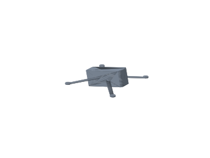
| calm_warm | 4.16 |
| cold_headwind | 5.05 |
| crosswind | 4.92 |
| gusty_light | 4.50 |
| hot_thin | 4.41 |
| storm | 5.86 |
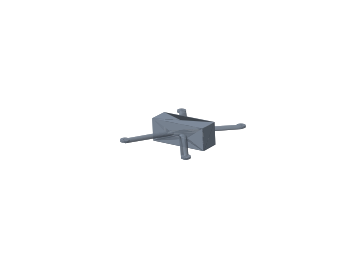
| calm_warm | 4.24 |
| cold_headwind | 5.12 |
| crosswind | 4.86 |
| gusty_light | 4.58 |
| hot_thin | 4.50 |
| storm | 5.98 |
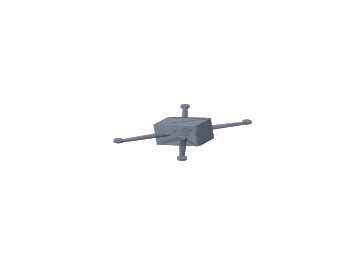
| calm_warm | 4.62 |
| cold_headwind | 5.62 |
| crosswind | 5.18 |
| gusty_light | 4.95 |
| hot_thin | 4.89 |
| storm | 6.50 |
| calm_warm | 5.04 |
| cold_headwind | 5.34 |
| crosswind | 5.44 |
| gusty_light | 5.22 |
| hot_thin | 5.34 |
| storm | 6.64 |
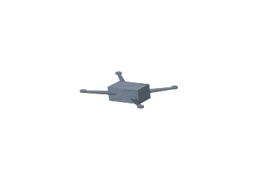
| calm_warm | 4.26 |
| cold_headwind | 6.59 |
| crosswind | 5.49 |
| gusty_light | 5.06 |
| hot_thin | 4.53 |
| storm | 6.96 |
| scenario | wh/km | avg power | max tilt | |
| calm_warm | 3.050 | 129.6 W | 25.8° | |
| cold_headwind | 3.355 | 142.5 W | 41.7° | |
| crosswind | 3.323 | 141.2 W | 37.9° | |
| gusty_light | 3.190 | 135.5 W | 34.2° | |
| hot_thin | 3.232 | 137.3 W | 28.3° | |
| storm | 4.079 | 173.3 W | 41.5° |
| scenario | wh/km | avg power | max tilt | |
| calm_warm | 3.109 | 132.1 W | 25.9° | |
| cold_headwind | 3.476 | 147.7 W | 42.1° | |
| crosswind | 3.393 | 144.1 W | 38.0° | |
| gusty_light | 3.261 | 138.6 W | 34.5° | |
| hot_thin | 3.294 | 139.9 W | 28.5° | |
| storm | 4.190 | 178.0 W | 43.2° |
| scenario | wh/km | avg power | max tilt | |
| calm_warm | 3.258 | 138.4 W | 25.7° | |
| cold_headwind | 3.541 | 150.4 W | 40.8° | |
| crosswind | 3.516 | 149.4 W | 37.0° | |
| gusty_light | 3.394 | 144.2 W | 33.6° | |
| hot_thin | 3.453 | 146.7 W | 28.0° | |
| storm | 4.333 | 184.1 W | 37.6° |
| scenario | wh/km | avg power | max tilt | |
| calm_warm | 3.317 | 140.9 W | 25.8° | |
| cold_headwind | 3.655 | 155.3 W | 41.4° | |
| crosswind | 3.595 | 152.7 W | 37.3° | |
| gusty_light | 3.465 | 147.2 W | 34.0° | |
| hot_thin | 3.515 | 149.3 W | 28.2° | |
| storm | 4.441 | 188.7 W | 40.6° |
| scenario | wh/km | avg power | max tilt | |
| calm_warm | 3.313 | 140.8 W | 26.0° | |
| cold_headwind | 3.739 | 158.9 W | 42.5° | |
| crosswind | 3.606 | 153.2 W | 37.8° | |
| gusty_light | 3.478 | 147.7 W | 34.7° | |
| hot_thin | 3.512 | 149.2 W | 28.6° | |
| storm | 4.486 | 190.6 W | 44.8° |
| scenario | wh/km | avg power | max tilt | |
| calm_warm | 3.367 | 143.0 W | 26.2° | |
| cold_headwind | 3.850 | 163.5 W | 43.5° | |
| crosswind | 3.681 | 156.4 W | 38.7° | |
| gusty_light | 3.542 | 150.5 W | 36.2° | |
| hot_thin | 3.567 | 151.6 W | 28.9° | |
| storm | 4.580 | 194.6 W | 48.5° |
| scenario | wh/km | avg power | max tilt |
| scenario | wh/km | avg power | max tilt |
| scenario | wh/km | avg power | max tilt | |
| calm_warm | 3.357 | 142.6 W | 26.1° | |
| cold_headwind | 3.798 | 161.4 W | 43.2° | |
| crosswind | 3.655 | 155.3 W | 38.5° | |
| gusty_light | 3.521 | 149.6 W | 35.1° | |
| hot_thin | 3.557 | 151.1 W | 28.8° | |
| storm | 4.544 | 193.0 W | 47.2° |
| scenario | wh/km | avg power | max tilt | |
| calm_warm | 3.412 | 145.0 W | 25.9° | |
| cold_headwind | 3.800 | 161.4 W | 42.0° | |
| crosswind | 3.715 | 157.8 W | 37.8° | |
| gusty_light | 3.572 | 151.8 W | 34.4° | |
| hot_thin | 3.615 | 153.6 W | 28.4° | |
| storm | 4.590 | 195.0 W | 42.7° |
| scenario | wh/km | avg power | max tilt | |
| calm_warm | 3.644 | 154.8 W | 27.3° | |
| cold_headwind | 4.709 | 200.1 W | 48.6° | |
| crosswind | 4.215 | 179.1 W | 41.0° | |
| gusty_light | 4.007 | 170.2 W | 45.5° | |
| hot_thin | 3.872 | 164.5 W | 30.7° | |
| storm | 5.319 | 226.0 W | 56.5° |
| scenario | wh/km | avg power | max tilt | |
| calm_warm | 4.350 | 184.8 W | 26.8° | |
| cold_headwind | 5.214 | 221.5 W | 44.2° | |
| crosswind | 4.945 | 210.1 W | 39.9° | |
| gusty_light | 4.680 | 198.8 W | 39.6° | |
| hot_thin | 4.614 | 196.0 W | 29.7° | |
| storm | 6.105 | 259.4 W | 50.0° |
| scenario | wh/km | avg power | max tilt | |
| calm_warm | 5.272 | 224.0 W | 25.3° | |
| cold_headwind | 5.588 | 237.4 W | 39.5° | |
| crosswind | 5.696 | 242.0 W | 37.1° | |
| gusty_light | 5.459 | 231.9 W | 32.7° | |
| hot_thin | 5.584 | 237.2 W | 27.5° | |
| storm | 6.951 | 295.3 W | 30.8° |
| scenario | wh/km | avg power | max tilt |
| scenario | wh/km | avg power | max tilt | |
| calm_warm | 4.162 | 176.8 W | 26.8° | |
| cold_headwind | 5.046 | 214.4 W | 48.1° | |
| crosswind | 4.916 | 208.9 W | 43.4° | |
| gusty_light | 4.503 | 191.3 W | 44.5° | |
| hot_thin | 4.408 | 187.3 W | 30.1° | |
| storm | 5.857 | 248.8 W | 57.1° |
| scenario | wh/km | avg power | max tilt | |
| calm_warm | 4.237 | 180.0 W | 26.8° | |
| cold_headwind | 5.122 | 217.6 W | 44.5° | |
| crosswind | 4.858 | 206.4 W | 40.3° | |
| gusty_light | 4.579 | 194.5 W | 40.4° | |
| hot_thin | 4.495 | 191.0 W | 29.8° | |
| storm | 5.978 | 253.9 W | 50.8° |
| scenario | wh/km | avg power | max tilt | |
| calm_warm | 4.617 | 196.1 W | 27.0° | |
| cold_headwind | 5.622 | 238.9 W | 47.1° | |
| crosswind | 5.176 | 219.9 W | 40.5° | |
| gusty_light | 4.953 | 210.4 W | 43.4° | |
| hot_thin | 4.889 | 207.7 W | 30.1° | |
| storm | 6.503 | 276.3 W | 55.3° |
| scenario | wh/km | avg power | max tilt | |
| calm_warm | 5.038 | 214.0 W | 25.3° | |
| cold_headwind | 5.342 | 226.9 W | 39.4° | |
| crosswind | 5.443 | 231.2 W | 36.9° | |
| gusty_light | 5.217 | 221.6 W | 32.7° | |
| hot_thin | 5.337 | 226.7 W | 27.5° | |
| storm | 6.642 | 282.2 W | 30.7° |
| scenario | wh/km | avg power | max tilt | |
| calm_warm | 4.264 | 181.2 W | 29.3° | |
| cold_headwind | 6.593 | 280.1 W | 59.8° | |
| crosswind | 5.491 | 233.3 W | 48.5° | |
| gusty_light | 5.056 | 214.8 W | 59.4° | |
| hot_thin | 4.535 | 192.6 W | 33.9° | |
| storm | 6.955 | 295.5 W | 68.6° |
| scenario | wh/km | avg power | max tilt |
{kind=link}